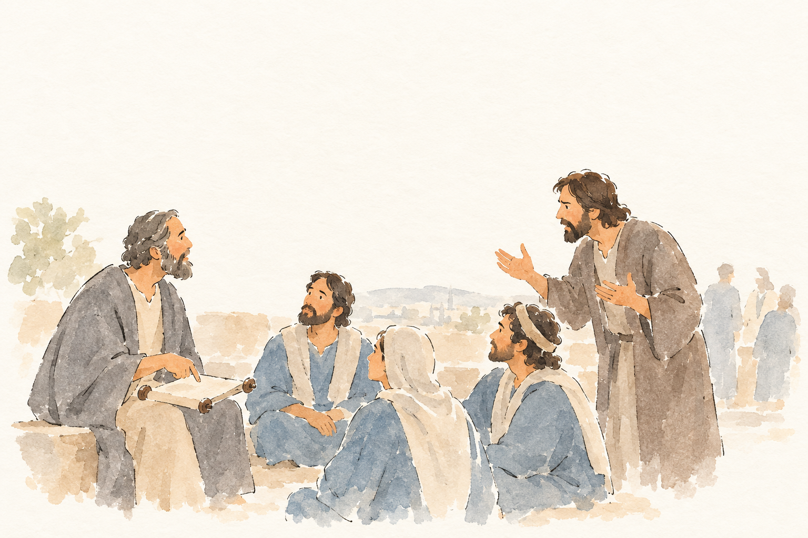
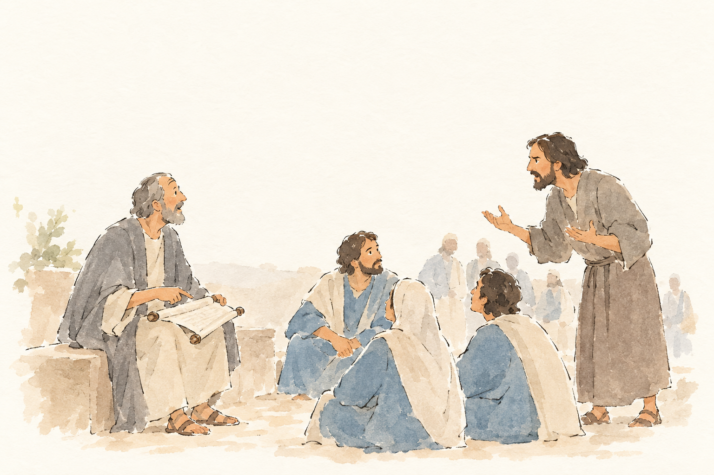
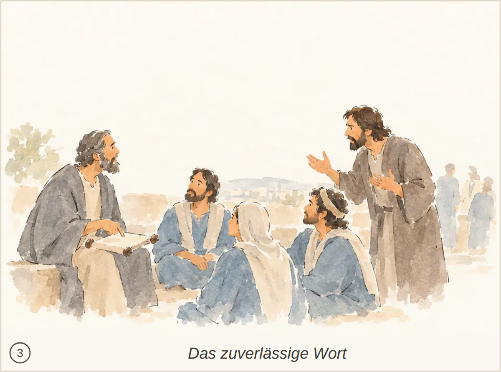
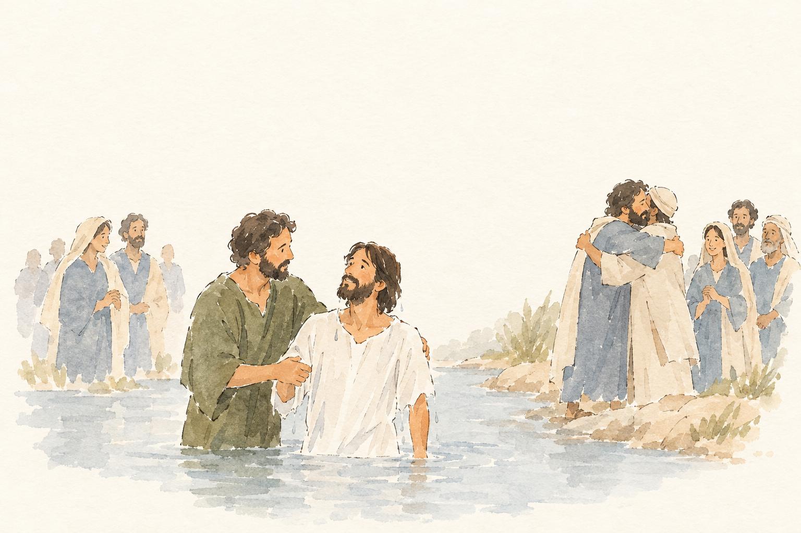
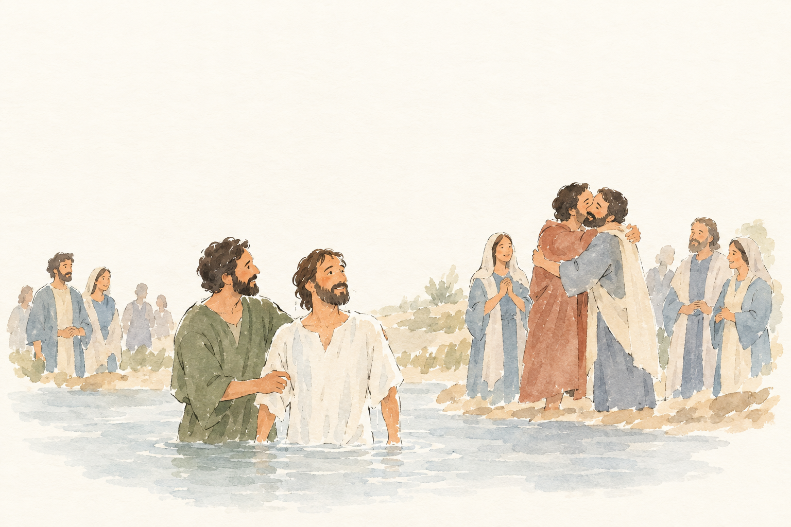
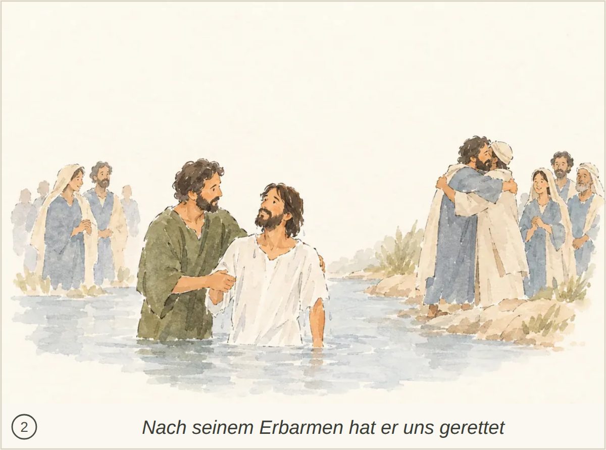
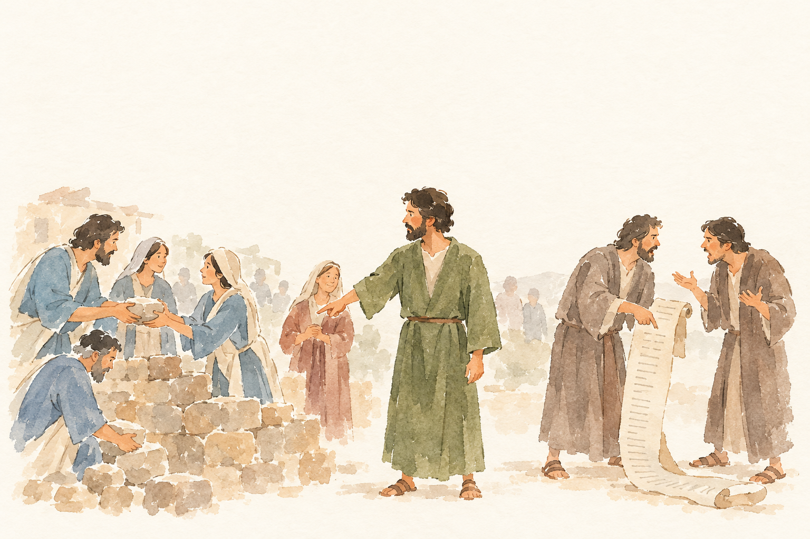
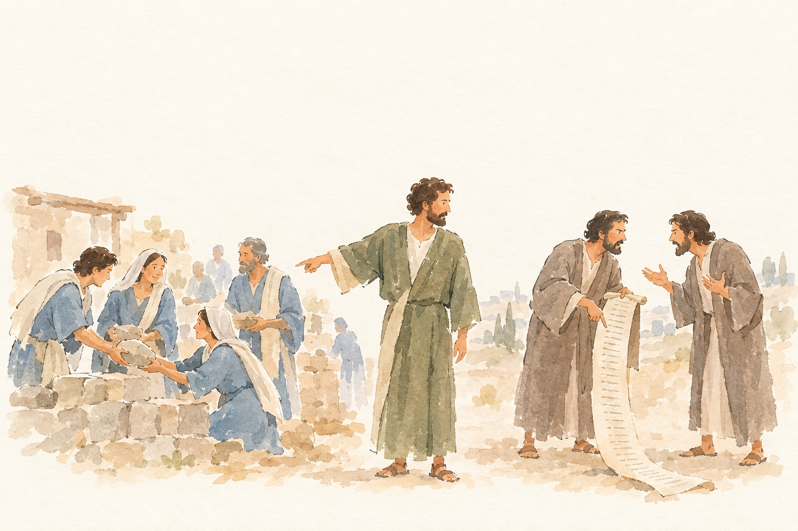
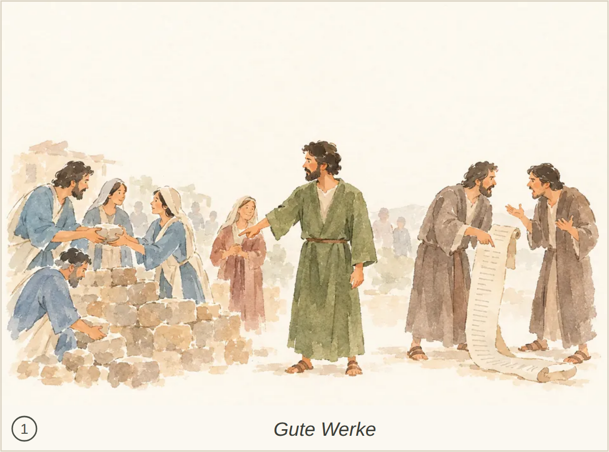

TIT-001-E3__r1v1.png ✔ gewählt: bestanden, 4 Punkte, Kern 1 Die Belehrung anhand der Schrift ist erkennbar, aber Ermahnung und Zurechtweisung von Widersprechenden bleiben unklar.
Blind: An older seated man points to an open scroll while three people sit nearby. A standing man gestures toward the group as if speaking, and several distant figures stand in the background. – The gathering around a scroll could illustrate a biblical teaching or discussion, but no specific story or moment is reliably identifiable from the picture alone.

TIT-001-E3__r1v2.png: unklar, 4 Punkte, Kern 1 Der Älteste mit der Schriftrolle ist erkennbar, aber seine Ermahnung und Zurechtweisung eines Widersprechenden bleiben unklar.
Blind: A standing man gestures toward an older seated man holding an open scroll. Other people sit nearby or stand in the background, appearing to listen or observe. – It could depict Jesus teaching or discussing scripture, but the picture does not identify a particular Bible story or exact moment with confidence.

Kachel: bestanden, Kern 1 Der Älteste verweist auf die Schrift, aber die Ermahnung und Zurechtweisung eines Widersprechenden sind nicht eindeutig erkennbar.

TIT-003-C2__r1v1.png ✔ gewählt: bestanden, 5 Punkte, Kern 1 Die Wasserszene könnte eine Taufe darstellen, doch Gottes Erbarmen und die geistliche Wiedergeburt bleiben unklar. Die Deutung als Taufe Jesu ist nicht gesichert.
Blind: Two men stand together in the water, with one supporting the other's arm as they look at each other. On the right bank, two people embrace while others stand nearby. – Possibly the baptism of Jesus by John the Baptist, with the two men standing in the river just before or after the baptism. No immersion or pouring of water is shown, so the exact moment is uncertain.

TIT-003-C2__r1v2.png: unklar, 5 Punkte, Kern 1 Die Szene deutet Taufe und Versöhnung an; Gottes Erbarmen, die Wiedergeburt durch den Heiligen Geist und die Hoffnung auf ewiges Leben bleiben jedoch unklar.
Blind: Two men stand together in the water, one holding the other's arm, while people watch from the banks. On the right bank, two other men embrace as nearby figures look on. – Possibly the baptism of Jesus by John the Baptist in the Jordan, showing the two standing together in the water. No immersion or other identifying sign is visible, so the precise moment and the identities of the people are uncertain.

Kachel: bestanden, Kern 1 Die Wasserszene passt zum Bad der Wiedergeburt, doch Gottes Erbarmen, die Erneuerung durch den Heiligen Geist und die Hoffnung auf ewiges Leben sind nicht erkennbar. Die Taufe Jesu bleibt eine ungesicherte Vermutung.

TIT-003-W1__r1v1.png ✔ gewählt: bestanden, 5 Punkte, Kern 1 Die Gegenüberstellung von guten Werken und Streit ist erkennbar, aber Titus und seine Aufforderung, gute Werke zu fördern und nutzlose Streitfragen zu meiden, bleiben unklar.
Blind: Several people handle stones beside a low wall, while the man in green points toward them. On the right, two men face each other and gesture over a long scroll. – Possibly Nehemiah and the rebuilding of Jerusalem's wall, but the picture alone does not establish a specific Bible story or exact moment.

TIT-003-W1__r1v2.png: bestanden, 4 Punkte, Kern 1 Der Gegensatz zwischen nützlichen guten Werken und törichtem Streit um das Gesetz bleibt unklar; Titus und seine Ermahnung werden nicht erkannt.
Blind: People on the left handle stones beside a low wall. A man in green points toward them while looking toward two men on the right, who gesture over a long scroll. – Possibly Nehemiah overseeing the rebuilding of Jerusalem's wall while facing opposition, but the figures and scroll do not identify a specific Bible story or moment with certainty.

Kachel: bestanden, Kern 1 Titus und seine Anweisung werden nicht eindeutig erkannt; der Gegensatz zwischen guten Werken und nutzlosen Streitfragen bleibt unklar.